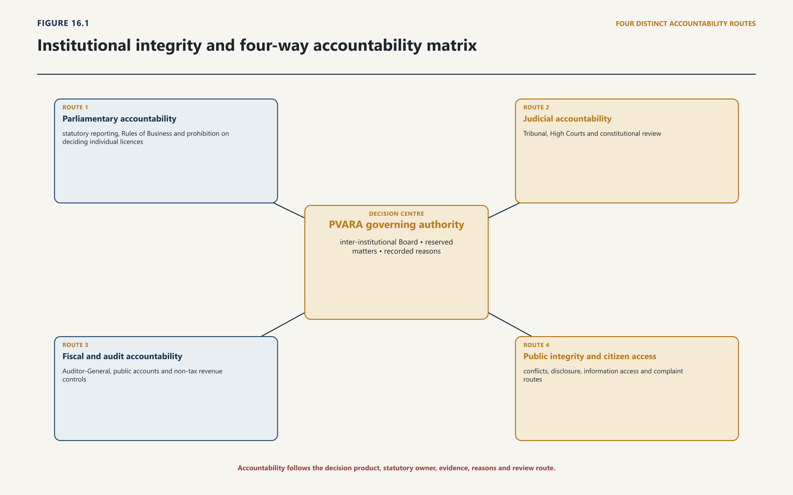
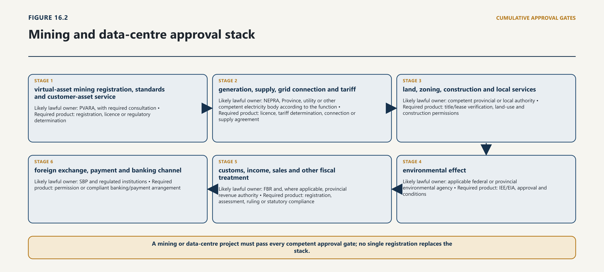

Chapter Sixteen · Part 4
Chapter 16 — Institutional Integrity, Federalism and Cross-Border Administration
16.1 Institutional Legality and Capability
16.1.1 Valid authority and operational ability
16.1.2 Resources, systems, reasons and accountability
1
The first institutional question is constitutional and administrative: by what law does a public body act? Federal executive authority is exercised in the name of the President by the Federal Government, extends to matters on which Parliament can legislate, and must be allocated and transacted under rules made pursuant to Article 99. The Rules of Business allocate business among Divisions, make the Secretary the official head responsible for the Division’s administration and require consultation where another Division’s business, financial authority, legal advice or revenue administration is engaged. These provisions supply a chain of governmental responsibility; they do not allow a Division to appropriate a statutory regulator’s adjudicative or operational function merely because the regulator falls within its administrative allocation.1

2
Four layers should be distinguished.
3
Constitutional competence asks whether the Federation or a Province can legislate or administer the subject. Statutory competence asks which body Parliament or a provincial legislature empowered, for what purpose and under what limits. Administrative allocation identifies the Ministry or Division responsible within executive government for the assigned business. Operational capacity asks whether the statutory and administrative machinery can actually receive evidence, decide a case, communicate the result and withstand review.
4
Each layer can fail independently. Parliament may validly establish a regulator whose first Board is incomplete. A fully constituted Board may delegate too broadly or without an accessible record. An administrative Division may possess a clear coordinating role but lack the sectoral power to determine a payment-system issue. A capable technical team may produce a sophisticated risk assessment that has no legal effect because the decision was taken by the wrong authority. Institutional integrity requires alignment across all four layers.
5
Capability should therefore be proved by operational evidence. The minimum evidence is not a photograph of a meeting or an organisational chart. It includes authenticated appointment and delegation instruments; approved regulations and codes; a budget and procurement path; position descriptions and filled posts; case intake and decision manuals; secure information systems; records of consultation; written reasons; review and complaint channels; publication practice; and audit findings. Some of this evidence can remain protected where disclosure would harm an investigation, system security or legitimate confidentiality. Its existence, ownership and review should still be demonstrable.
6
This method also prevents premature conclusions about failure. Absence of a document from the bounded public corpus means that the document was not located in that corpus; it does not prove that the document does not exist. Where the legal validity of an appointment, delegation or transitional act matters, the correct response is to obtain the Gazette notification, order, Board resolution, minutes or other authenticated record. A public-integrity finding cannot rest on search-engine absence.
16.2 PVARA’s Constitution, Appointments and Delegation
16.2.1 Office, tenure and authority
16.2.2 Delegated decision-making and institutional proof
7
The Virtual Assets Act establishes PVARA as a body corporate with perpetual succession, a common seal and operational autonomy. General direction and administration vest in a Board. The statutory membership is deliberately inter-institutional: the Chairperson; Secretaries of the Finance and Law Divisions; the Governor of SBP; the Chairpersons of SECP, the National AML/CFT Authority and the Pakistan Digital Authority; and two independent members appointed on the Federal Government’s recommendation. The Board determines policy and strategy, approves budgets and regulations, oversees performance and exercises the Authority’s statutory powers.2
8
Board design matters because the Act does not create a loose advisory group. It specifies a minimum meeting frequency, quorum and mandatory attendance for a valid quorum. Fifty per cent of total membership forms the quorum, but the Chairperson, Finance Secretary and SBP Governor must be present. Decisions are by majority of those present and voting. A working secretariat should therefore maintain a Board-validity checklist for every meeting: current membership instruments, notice, agenda, conflict disclosures, quorum, mandatory attendance, vote, reasons where required, minutes, action owner and publication status. A committee recommendation is not a Board decision unless the statute, a valid delegation or subsequent ratification gives it that effect.
9
The Chairperson and Managing Director occupy different offices. The Federal Government appoints the Chairperson under the statutory eligibility and tenure provisions. PVARA appoints the Managing Director, who serves as chief executive and is responsible for day-to-day management, subject to the Board’s direction and a statutory term. The Authority may appoint staff and create posts through regulations, using transparent and competitive procedures; secondments must also rest on the prescribed arrangements. The distinction should be visible in every public decision. The Board sets and exercises statutory authority; the Chairperson leads the Board and performs powers lawfully assigned to that office; the Managing Director administers and exercises delegated powers; staff act through assigned posts and authorisations.
10
Section 10 permits PVARA to delegate any power or function to the Managing Director on specified terms, conditions and limitations. That breadth is operationally useful but institutionally hazardous if treated as self-executing. The Act authorises delegation; it does not prove that a particular delegation has occurred. Each exercise of delegated power should cite the dated Board instrument, provision delegated, conditions, financial or subject limits, duration, sub-delegation position and reporting obligation. A public delegation register can disclose that architecture without exposing protected case information.
11
As a matter of corrective design, the Board should retain a defined class of reserved matters even if the statute could permit delegation. These should include approval of regulations; licensing policy and novel perimeter determinations; grant, refusal, suspension or cancellation decisions of exceptional market significance; major sanctions and systemic directions; the budget and annual report; the code of conduct and conflict framework; approval of foreign cooperation arrangements before Federal Government approval is sought; and material departures from published policy. Routine, time-sensitive or technical decisions can be delegated within monetary, risk and subject thresholds, with escalation and reporting rules.
12
The available official record evidences institutional activity but must be described with precision. An official August 2025 press release described the inaugural Board meeting and referred to Bilal bin Saqib as PVARA Chairman, the creation of committees and work on a complaint portal. The general and activity-specific Regulations were subsequently notified. These materials evidence official representation, delegated lawmaking and operational activity; they do not prove the status of every appointment, delegation or licensing decision. In the bounded project corpus and official-site searches completed for this chapter, no appointment notification for the Chairperson, complete Board-membership notification, Managing Director appointment, section 10 delegation instrument, staff regulations or section 16 code was located. That is a verification gap, not a finding of non-appointment or invalidity.3
13
The immediate cure is an authenticated institutional register. It should contain the establishing Act and amendments; current Rules of Business allocation; appointments and terms; Board and committee constitution; delegations and reservations; final rules, regulations and guidelines; approved organisational structure; designated information officer; foreign arrangements and approvals; and superseded instruments. Public versions should link to Gazette copies or signed records, identify effective dates and retain an archive. Protected annexes may hold personal or security-sensitive material.
16.3 Policy Direction, Independence and Accountability
16.3.1 Executive policy and statutory discretion
16.3.2 Transparency, review and capture risk
14
PVARA’s autonomy is not isolation from elected government. Section 71 allows the Federal Government to issue policy directions through notification in the official Gazette, but the direction must be consistent with the Act and must not impede PVARA’s operational autonomy. Section 72 requires annual and special reporting and transmission through the concerned Division for laying before Parliament, followed by website publication. The Rules of Business, as amended through 23 July 2026, allocate PVARA to the Cabinet Division. The combined structure is a controlled interface: government may set lawful policy through a formal, public instrument; PVARA applies the statute and exercises operational judgment; the administratively responsible Division transmits and accounts; Parliament, audit institutions, courts and the public supply further review.4
15
This arrangement will fail if either side collapses the distinction. A telephone instruction, meeting preference or press statement is not a Gazette policy direction. Equally, operational autonomy is not authority to disregard the Act, a valid policy direction, public-finance controls or judicial review. PVARA should require every asserted direction to identify its statutory basis, issuing authority, Gazette reference, consistency analysis, operational-autonomy assessment, effective date and affected instruments. A policy-direction register should publish the direction and PVARA’s implementation response, subject only to a lawful and reasoned restriction.
16
The administrative Division’s role should be equally disciplined. Cabinet Division can coordinate appointments, rules requiring Federal Government action, parliamentary transmission and whole-of-government business assigned to it. It should not decide individual licences, dictate an investigation or substitute its risk judgment for the Board where the Act vests the function in PVARA. A submission moving between PVARA and Cabinet Division should state whether the Division is being asked to approve, advise, transmit, coordinate or simply note the matter. Ambiguous file movement produces ambiguous responsibility.
17
Accountability should follow the decision, not just the institution. For each material PVARA product, the record should show the statutory owner, delegate if any, evidence considered, consultations, conflicts and recusals, reasons, conditions, review route, publication decision and implementation owner. Aggregate performance reporting should disclose application volumes and age, outcomes, reasons categories, supervisory inspections, remediation, complaints, enforcement stages, coordination referrals, litigation and systemic incidents. Metrics should not reward licence volume at the cost of scrutiny or enforcement volume at the cost of legality.
18
Several accountability channels operate at once and should not be confused. The Board holds management to the statute, budget and approved risk appetite. Cabinet Division remains answerable for the administrative business allocated to it and for timely transmission of statutory reports. The Auditor-General and public-finance system examine the use and reporting of public money. Parliament receives the reports the Act requires and can examine policy and administration without deciding an individual licence. Courts and statutory review bodies test legality in properly brought proceedings. The public receives operative instruments, reasons and performance evidence subject to lawful protection. A complaint office can resolve service and conduct failures but cannot secretly replace an appeal or confer a remedy beyond its legal authority. PVARA’s accountability map should name the product, recipient, deadline and consequence attached to each route.
16.4 Inter-Regulator Allocation
16.4.1 PVARA, SBP, SECP, FMU, FBR and FIA
16.4.2 Joint matters, lead authority and dispute resolution
19
The Board’s cross-membership creates an unusually strong opportunity for coordination. It does not create a consolidated legal person or pooled statutory mandate. Each institution must enter the joint process through the gateway supplied by its own law and leave with a decision product it is authorised to issue.
20
SBP. The State Bank’s primary objectives and functions include price and financial stability and the formulation and implementation of monetary, exchange-rate and financial-sector policies, including regulation and supervision of banks, financial institutions and payment systems. Its statute protects autonomy and prohibits external direction or influence except as the law permits. PVARA may classify and license a virtual-asset service and must consult SBP where the Bank’s mandate is implicated; it cannot authorise a payment system, relax foreign-exchange law or convert a reserve, settlement or banking question into a virtual-asset-only question. The SBP Governor’s Board membership supplies an institutional bridge, not a transfer of the Bank’s power.5
21
SECP. SECP administers the company, securities, futures, insurance, non-bank financial and corporate sectors assigned by law. A token can engage PVARA’s virtual-asset perimeter and SECP’s capital-market or company-law perimeter at the same time. PVARA’s statutory classification power and consultation duty should yield a joint perimeter record: the asset or activity facts; each potentially applicable statutory definition; each regulator’s conclusion; conditions or referral; and treatment of later factual change. Neither institution should issue a comfort letter purporting to immunise conduct under the other’s law. SECP’s own delegation, conflict and minute requirements remain applicable to its part of the decision.6
22
FMU and the National AML/CFT Authority. The FMU has a specialised operational function: receipt, analysis and, where statutory conditions are met, dissemination of suspicious transaction and currency transaction information. Its day-to-day autonomy and confidentiality cannot be replaced by a general demand that all intelligence be shared across a coordination committee. PVARA, as AML/CFT regulator for persons within its perimeter, sets and supervises preventive obligations and makes lawful reports or referrals. The National AML/CFT Authority provides overarching policy and implementation coordination and acts as the national FATF focal point. Its ability to address overlap does not transfer each competent authority’s investigative, supervisory or foreign-arrangement powers. Coordination should therefore separate policy data, supervisory information, financial intelligence and evidence for proceedings; each category requires its own gateway and handling controls.7
23
FBR and investigative institutions. FBR administers the fiscal laws, tax compliance, taxpayer systems and tax-related investigation and coordination authorised by those laws. PVARA can require licensee records, share information lawfully and clarify the regulated activity; it cannot determine a tax liability outside a fiscal-law function. The Federal Investigation Agency’s statutory powers attach to offences within its scheduled jurisdiction and are exercised through its own superintendence, officers and criminal procedure. A PVARA suspicion or complaint is not itself proof of an offence, and a referral is not an instruction to arrest or search. The referral package should identify the conduct, suspected legal provision, persons and assets, preservation urgency, data provenance, action already taken and contact officer. Where cybercrime jurisdiction lies with another competent agency under the law then in force, the current referral matrix must identify that agency rather than rely on an outdated institutional label.8
24
Pakistan Digital Authority and sector bodies. The Digital Nation Pakistan Act places the Pakistan Digital Authority within a national digital-governance architecture and permits standards and oversight in assigned emerging-technology and virtual-asset matters, while expressly requiring avoidance of overlap and conflict with sectoral laws. Data custodians retain control of their data. PDA can therefore support interoperable identity, data exchange, architecture, cybersecurity and service standards; it does not acquire PVARA’s licensing function or another regulator’s legal mandate. The National Digital Commission, which includes federal and provincial political leadership and major regulators, can address whole-of-government obstacles, but a high-level coordination resolution still requires implementation through the competent body and instrument.9
25
Coordination must culminate in usable decisions. A standing perimeter committee should maintain a case protocol, not merely hold meetings. It should establish intake criteria, lead-owner selection, mandatory consultees, time limits, protected information rooms, disagreement escalation, parallel-proceeding rules, no-objection language, decision templates and a change-of-facts trigger. For recurring products, regulators should publish joint or aligned guidance. For individual cases, the applicant should receive one coordinated timetable but legally distinct decisions where distinct statutes require them.
16.5 Federal–Provincial Administration
16.5.1 Tax, services, police powers and public projects
16.5.2 Coordination without unconstitutional displacement
26
Virtual-asset licensing is federal, but many physical, commercial and enforcement facts occur in provinces. The constitutional distribution cannot be reduced to the proposition that a federal licence displaces every provincial rule. Federal executive authority follows federal legislative competence; provincial executive authority follows provincial legislative competence. Parliament has exclusive power over the Federal Legislative List, while provinces retain matters outside that List, subject to the Constitution. Federal law prevails over inconsistent provincial law only within the constitutional conditions governing valid legislation; repugnancy is not a cure for a law made outside the legislating body’s competence.10

27
This is not an invitation to classify every dispute in advance. It is a requirement to identify the actual subject and decision. Company, banking, currency, interprovincial commerce and federally regulated institutions may engage federal entries. Land administration, many environmental and consumer functions, local permissions and provincial enforcement may engage provincial law. Criminal law, criminal procedure and evidence have their own constitutional treatment. A business can therefore hold a valid PVARA authorisation and still lack a necessary provincial, local or sector approval.
28
Electricity illustrates the point. The Constitution assigns the Council of Common Interests responsibility for Federal Legislative List Part II matters and gives the Provinces specified authority concerning electricity, including generation, distribution within the Province and taxation of consumption, with disputes routed through the CCI structure. NEPRA’s statute makes it exclusively responsible for regulating electric-power services within its legal field, including licensing and tariff functions, while preserving specified provincial roles. Cabinet Division’s administrative control of both PVARA and NEPRA does not merge their powers. A PVARA approval cannot set an electricity tariff, confer a generation or supply licence or settle a provincial electricity issue.11
29
Mining makes the approval stack concrete. Section 37 of the Virtual Assets Act allows PVARA to make rules, regulations, standards and guidelines for virtual-asset mining in consultation with relevant authorities; pure mining is not itself treated as VASP activity, customer-asset services require licensing, and PVARA may register operators exceeding prescribed energy or computing thresholds. That provision regulates the virtual-asset and registration aspects. It does not confer land, construction, environmental, grid-connection, electricity-service or tax approval. Environmental law can require an initial environmental examination or environmental impact assessment before construction or operation, and the responsible agency varies with territory and applicable federal or provincial legislation. The Khyber Pakhtunkhwa statute, for example, establishes its provincial EPA and requires prior environmental approval for prescribed projects.12
30
A serious mining proposal should therefore receive an approval-stack schedule before public commitment:
| Question | Likely lawful owner | Required product |
|---|---|---|
| virtual-asset mining registration, standards and customer-asset service | PVARA, with required consultation | registration, licence or regulatory determination |
| generation, supply, grid connection and tariff | NEPRA, Province, utility or other competent electricity body according to the function | licence, tariff determination, connection or supply agreement |
| land, zoning, construction and local services | competent provincial or local authority | title/lease verification, land-use and construction permissions |
| environmental effect | applicable federal or provincial environmental agency | IEE/EIA, approval and conditions |
| customs, income, sales and other fiscal treatment | FBR and, where applicable, provincial revenue authority | registration, assessment, ruling or statutory compliance |
| foreign exchange, payment and banking channel | SBP and regulated institutions | permission or compliant banking/payment arrangement |
31
The same discipline applies outside mining. A tokenised property service cannot cure defective land title. A federally licensed exchange cannot direct provincial police. A provincial consumer agency cannot vary SBP exchange-control requirements. Government should publish a federal–provincial service map identifying the decision owner, legal source, documents, service standard, review route and data exchange for each recurring activity. Where a policy spans Federal Legislative List Part II or raises a genuine intergovernmental dispute, the CCI structure should be used rather than replaced by an informal committee.
16.6 Transitional and Policy Bodies
16.6.1 Pakistan Crypto Council and other arrangements
16.6.2 Mandate, evidence, continuity and accountability
32
Transitional coordination can be valuable before a permanent regulator is fully operating. It can gather technical expertise, convene existing authorities, commission draft legislation and expose operational dependencies. Its legal status must nevertheless be proved, not inferred from the prominence of its meetings or members.
33
Official government press releases in April and June 2025 described the Pakistan Crypto Council as established under the Finance Division, identified office-holders or advisers, and recorded work on draft laws and a governance framework through a technical committee involving SBP, SECP and the Law and IT institutions. These are reliable official records of what the Government publicly represented and of the activities described. In the bounded project corpus and official searches completed for this chapter, however, no standalone constitutive notification, terms of reference or delegation instrument for the Council was located. The proper conclusion is limited: the reviewed press releases evidence policy and coordination activity, but do not by themselves establish the Council’s precise legal constitution or confer a licensing, regulatory, spending or coercive power.13
34
That distinction controls transitional legality. An advisory council may recommend policy, commission research through a lawful procurement route, coordinate a draft and make proposals to the competent executive or statutory body. Unless another instrument provides otherwise, it should not grant regulatory permission, bind an independent regulator, direct a criminal investigation, appoint statutory officers, commit public assets or represent a private proposal as government approval. Once PVARA’s Act assigns the permanent function, any continuing Council role should be reconciled with the Act and the July 2026 Rules of Business allocation.
35
Government should authenticate the Council’s institutional record before relying on its earlier work. The record should include the establishing authority, membership and appointment basis; mandate and expiry; secretariat and administrative Division; meeting and decision rules; conflicts and confidentiality; budget and procurement authority; ownership and transfer of records; and relationship to PVARA, Cabinet Division, Finance Division and other regulators. If the Council has completed its transitional purpose, a closure or transfer instrument should identify which body receives its proposals, contracts, data, correspondence and unresolved commitments. If it continues, the instrument should confine it to a role consistent with the enacted framework.
36
Transition does not invalidate useful work merely because a permanent institution later exists. Drafts, consultation responses, technical studies and risk registers can be transferred as evidence and considered afresh by the authorised decision-maker. What cannot be transferred informally is legal authority. PVARA’s Board should adopt, modify or reject inherited work through a recorded decision after confirming its source, consultation status and consistency with the Act.
16.7 Resources, Operating Model and Administrative Proof
16.7.1 Budget, staffing, systems and service standards
16.7.2 Registers, decisions and auditable performance
37
Operational autonomy requires an operating model. The Virtual Assets Act creates a Fund, permits specified receipts and expenditure, subjects the arrangement to public-finance law and requires audit by the Auditor-General and a chartered-accountancy firm. The Public Finance Management Act regulates public and autonomous entities, financial-management policies, self-generated statutory revenue, accounts, parliamentary laying and audit. PVARA will also be a federal procuring agency for procurement within the Public Procurement Regulatory Authority framework, including acquisition of services and relevant public-private transactions. Fee income cannot be treated as off-book operating discretion, and technology urgency does not displace procurement, accounting or audit.14
38
The first operating plan should be function-led. An organisational chart prepared before the case model risks reproducing titles without work. PVARA should estimate the volume, complexity and service standard for at least these workflows:
39
perimeter enquiry and classification;
40
NOC and licence assessment, including beneficial ownership and fitness;
41
prudential, custody, technology, conduct and AML/CFT supervision;
42
market monitoring, complaints, incidents and enforcement;
43
rulemaking, consultation, guidance and legal review;
44
domestic and foreign cooperation;
45
data governance, cybersecurity, records and disclosure;
46
finance, procurement, human resources, internal audit and Board secretariat.
47
Each workflow needs a lawful owner, delegable tasks, competency profile, separation of duties, evidence inputs, system support, decision template, review step and publication outcome. Staffing regulations should then convert that model into posts. Recruitment should test regulatory judgment, law, finance, accounting, blockchain analytics, cybersecurity, custody, markets, AML/CFT, data and investigations rather than rely on generic technology credentials. Seconded personnel can accelerate capability, but their reporting lines, access, conflicts, confidentiality, evaluation and return arrangements should be documented. A secondee remains constrained by the recipient institution’s lawful function and data rules.
48
Implementation also depends on incentives and trust that a statute cannot establish by naming a committee. The evidence-controlled questions are whether officers can refer a matter without losing ownership of their legal mandate; whether disagreement has a recorded escalation route; whether performance measures reward cautious referral as well as speed; whether institutions can share the minimum lawful information without exposing protected data; and whether budget, procurement and staffing cycles match the transition timetable. These are design risks, not findings of bad faith or institutional hostility. They should be tested through case files, service standards, tabletop exercises and recorded after-action review.
49
The minimum technology estate is not a public dashboard. It includes secure application intake; identity and beneficial-ownership verification; document and evidence management; workflow, reasons and approvals; licence conditions and change control; supervisory returns; risk scoring with human review; market and on-chain analytics; complaint and incident handling; referral and cooperation logs; records retention; access control; audit trails; secure exchange with other institutions; and a public register connected to the operative internal record. Procurement specifications should preserve government access to data, model logic, configuration, logs and exit assistance. A vendor should not become the unreviewable decision-maker or exclusive custodian of public regulatory evidence.
50
Manuals are part of capacity. During implementation of the notified licensing framework, PVARA should approve perimeter, licensing, supervision, enforcement, incident, complaints, information-sharing, confidentiality, records, publication and business-continuity manuals. Manuals cannot amend the Act or create an undisclosed burden on applicants. They translate authorised rules into repeatable work, identify when legal advice or another regulator is required and make quality assurance possible.
51
Budget sequencing should match regulatory risk. The Board should approve a multi-year resource plan distinguishing establishment costs, recurrent supervision, specialised contractors, secure technology, training, litigation, international engagement and contingency. Application or supervisory fees should be modelled against the cost and incentives they create; a regulator financially dependent on approving volume faces a structural risk even without any individual misconduct. Internal audit should test delegation, case ageing, access rights, procurement, fee handling, conflict compliance and closure of supervisory findings. External audit confirms financial and selected control evidence; it does not substitute for policy or legal accountability.
16.8 Transparency, Publication and Version Control
16.8.1 Authoritative instruments and public notice
16.8.2 Legal certainty and status hygiene
52
PVARA regulates through instruments with different legal effects: the Act, Federal Government rules, Authority regulations made in consultation with the concerned Division, guidelines, licence conditions, individual decisions, public notices and consultation drafts. A market participant must be able to determine which instrument is operative, who made it, when it began, whom it binds, what it replaced and how it can be challenged. A webpage that mixes drafts and final law without status metadata is an institutional risk.
53
The Right of Access to Information Act applies to federal public bodies, including statutory corporations and bodies corporate established by federal law. It requires record maintenance and proactive publication of institutional functions, applicable instruments, manuals and policies, licensing conditions and recipients, decision processes, budgets and final reports. It also recognises exclusions and exemptions for matters such as investigations, security, privacy, confidence, legitimate commercial interest and deliberative process, while requiring severance where only part of a record is protected. Transparency is therefore an administered legal function, not a choice between publishing everything and publishing nothing.15
54
PVARA should maintain an authoritative online instrument register with at least these fields:
| Field | Institutional purpose |
|---|---|
| instrument title and unique identifier | prevents citation to an ambiguous page or file |
| issuing authority and legal basis | proves competence |
| instrument type and legal status | distinguishes Act, rule, regulation, guideline, licence condition, draft and notice |
| Gazette reference or signed decision | links publication to authenticated authority |
| issue, commencement and cessation dates | controls temporal application |
| amendments and consolidated version | makes the current text discoverable without erasing history |
| affected persons and transitional rule | supports fair implementation |
| consultation and response record | evidences participation and reasoned change |
| review, appeal or contact route | connects the instrument to remedy |
| machine-readable metadata and checksum | supports reliable reuse and detects silent replacement |
55
The same discipline should govern appointments, delegations, Board committees, policy directions and cooperation arrangements. Individual regulatory decisions require a calibrated publication rule. Final precedential or systemic decisions should ordinarily be published with reasons and necessary redactions. Routine applicant-specific material may be disclosed through an updated register. Investigation steps, personal data, security architecture, suspicious-transaction information and protected commercial material require specific handling. The officer applying an exemption should identify the legal ground, assess the harm, sever non-exempt material and preserve the complete record for review.
56
PVARA’s earlier website and consultation materials recorded the NOC and consultation stages. The Pakistan Virtual Asset Services Regulations, 2026 and Pakistan Virtual Asset Activity-Specific Regulations, 2026 are now notified. The official website should continue to identify each instrument’s status, version, effective date and superseded text so that applicants, regulated persons and courts can determine which rule applied on every material date.
57
Annual reporting should connect legal duties to performance. Section 72 reports and the section 15 financial report should disclose the period, statutory route and laying/publication date. A complete public account would cover Board and committee attendance, delegations, staffing and vacancies, budget and audited expenditure, licence and NOC inventory, supervision, complaints, incidents, enforcement, coordination, judicial review, international arrangements, consultations, service standards, information requests and remediation of audit findings. Numbers should be accompanied by definitions and prior-period comparability. Publication after parliamentary laying should not become an indefinite reason to withhold a completed report; the responsible Division should track the statutory ninety-day transmission and laying chain.
16.9 Cross-Border Supervision and Cooperation
16.9.1 Information exchange and supervisory colleges
16.9.2 Foreign regulators, service providers and enforcement
58
Virtual-asset activity crosses borders in at least four legally different ways: a foreign person may target Pakistani users; a Pakistani licensee may serve or depend on a foreign market; a regulator may need supervisory information from a foreign counterpart; and an investigation or court may require evidence, restraint or enforcement abroad. One memorandum of understanding cannot lawfully perform all four functions.
59
The Virtual Assets Act gives PVARA domestic information-sharing and coordination powers and allows foreign cooperation arrangements with prior Federal Government approval. AML legislation separately allows the FMU and competent AML/CFT regulators to cooperate through their own gateways. Those arrangements can support supervisory college work, typology exchange, licence verification, inspection coordination and lawful transfer of regulatory information. They must specify purpose, permitted use, confidentiality, onward disclosure, security, retention, breach handling and the treatment of compelled or privileged material. Before signing, PVARA should identify the approving authority, confirm compatibility with section 39 data-localisation duties and other applicable law, and record which functions are not covered.16
60
Mutual recognition should be conditional, not reputational. Recognition of a foreign licence can reduce duplicate assessment, but only after comparison of legal perimeter, ownership and fitness tests, custody and client-asset rules, prudential requirements, AML/CFT supervision, technology controls, enforcement powers, information access, insolvency treatment and cooperation reliability. Recognition should be activity-specific, time-limited, reviewable and capable of suspension. It should not prevent Pakistan from applying mandatory local law or requiring a locally reachable representative, records and assets where needed for effective supervision and remedy.
61
A supervisory arrangement is not mutual legal assistance in a criminal matter. Pakistan’s Mutual Legal Assistance (Criminal Matters) Act designates the Secretary of the Ministry of Interior as central authority, requires requests received by another Pakistani body to be referred to that authority, and provides judicial routes for evidence, search, electronic-data preservation, freezing, seizure and confiscation. PVARA can preserve its own records, make a lawful referral and supply subject-matter assistance. It cannot use a supervisory MoU to perform a coercive search abroad or register a foreign confiscation order in Pakistan. Urgent cases need a pre-agreed route from PVARA or the investigating agency to the central authority, including the information required for preservation and the later production request.17
62
Cross-border administration should be organised through four playbooks:
63
Market-access playbook: test targeting, local incorporation or presence, licence, advertising, outsourcing, custody, data and service of process.
64
Supervisory-cooperation playbook: identify counterpart, legal gateway, approval, confidentiality, permitted use, joint work and exit.
65
Incident playbook: preserve data and assets lawfully, allocate regulator and investigator leads, notify affected authorities and maintain a chronology.
66
Criminal and enforcement playbook: route requests through investigators, prosecutors, the MLA central authority and courts; separate evidence gathering, restraint, confiscation, extradition and civil enforcement.
67
Every foreign request should have a register entry recording sender, authentication, statutory basis, purpose, classification, affected persons and data, owner, decision, disclosures, conditions, deadlines and closure. Aggregate statistics can be published without compromising cases. Refusal or limitation should be reasoned and escalated through the applicable agreement or statutory route.
68
Cross-border data movement requires an additional control. The fact that a counterpart is a regulator does not make every requested dataset necessary or lawfully exportable. PVARA should conduct a field-level purpose and necessity assessment, apply local retention and localisation duties, exclude unrelated customer information and document whether the recipient may use the material for supervision, investigation or onward transmission. Where the requested use changes, fresh authority should be obtained. This protects cooperation from becoming an unbounded data gateway.
16.10 Public Integrity
16.10.1 Conflicts, appointments and procurement
16.10.2 Reasoned administration and institutional trust
69
Virtual-asset regulation is unusually exposed to informational capture. Regulators must learn from developers, exchanges, financial institutions, miners, investors and forensic vendors, but market actors often possess information unavailable elsewhere and may benefit directly from the rule or classification under discussion. Public integrity therefore requires structured contact, not institutional isolation.
70
Section 16 of the Virtual Assets Act requires a code governing integrity, impartiality, confidentiality, good faith and conflicts, with regulations addressing disclosure, trading restrictions, confidentiality and post-tenure conduct. Comparable Pakistani regulatory statutes demonstrate workable elements: declaration of direct and indirect pecuniary interests, recording in minutes, recusal, exclusion from quorum, restrictions on private interests and post-employment safeguards. Public-procurement law adds a separate integrity field where advisers or vendors can shape requirements from which they later benefit.18
71
PVARA’s code should cover Board members, committee members, employees, secondees, advisers, experts and contractors according to their role. At minimum it should require:
72
initial, annual and event-driven declarations of assets, token holdings, investments, offices, clients, close relationships and beneficial interests relevant to the mandate;
73
pre-meeting conflict review, recorded disclosure, reasoned recusal and quorum treatment;
74
restrictions on trading and use of non-public regulatory or market information, including connected accounts and controlled wallets;
75
gifts, hospitality, sponsored travel and conference rules;
76
a register of external meetings, written submissions and material ex parte contacts during rulemaking or live decisions;
77
procurement separation, vendor-conflict checks and ownership of deliverables and data;
78
confidentiality classifications and lawful whistleblowing routes;
79
cooling-off and post-tenure restrictions calibrated to role, information and enforceability; and
80
investigation, sanction, review and publication rules for code breaches.
81
These controls address risk; they are not findings against any person. A design vulnerability, such as dependence on industry-funded expertise or excessive delegation, must be reported as a vulnerability unless evidence establishes misconduct through a fair process. Public allegations, anonymous claims and screenshots should be preserved and assessed, not converted into conclusions. The responsible institution should authenticate records, obtain the subject’s response where fairness requires, protect witnesses and confidential information, and distinguish administrative, disciplinary, civil and criminal consequences.
82
Capture can also be procedural. A regulator may hear only from large applicants, allow a consultation draft to circulate through private channels, depend on one analytics provider or treat technical complexity as a reason not to publish explanations. Countermeasures include open consultation, a response-to-comments document, small-firm and consumer participation, independent technical review, rotation or contestability of vendors, publication of evidence standards and reasoned perimeter decisions. A market-contact log should disclose subject, participants and submitted documents without exposing protected case information.
83
Integrity extends to targets and metrics. If the institution is praised for rapid approvals, high fee revenue or attracting investment without equal measures for consumer loss, market integrity, remediation and decision quality, staff receive a distorted signal. The Board’s risk appetite and performance scorecard should expressly protect refusal, conditional approval and slower enhanced review where evidence warrants them.
Institutional Design Implications
84
The following high-level responsibility map is a pre-decision control, not a substitute for the governing statute or case-specific competence analysis.
| Function | Accountable owner | PVARA role | Required coordination and evidence |
|---|---|---|---|
| virtual-asset classification and VASP licensing | PVARA Board or valid delegate | lead and decision-maker | asset/activity facts; SBP or SECP consultation where mandates engage; written classification and conditions |
| monetary, foreign-exchange, banking and payment-system matter | SBP | regulated-activity facts, licence conditions and referral | SBP decision under its law; no implication from PVARA licence |
| securities, futures, company or regulated capital-market matter | SECP | joint perimeter analysis and virtual-asset supervision | separate SECP conclusion; coordinated timetable and change trigger |
| AML/CFT preventive supervision of PVARA-regulated persons | PVARA as competent regulator, within AML law | lead supervision | risk assessment, examination, remediation, sanctions and policy coordination |
| receipt and analysis of STR/CTR intelligence | FMU | reporting, protected supplementary information and response | statutory confidentiality, dissemination threshold and audit trail |
| national AML/CFT policy and FATF coordination | National AML/CFT Authority | sector implementation evidence | policy and implementation forum without displacement of competent powers |
| federal fiscal-law administration | FBR | licence and transaction information through lawful gateway | taxpayer and transaction evidence; fiscal-law assessment or action |
| criminal investigation | FIA or other competent agency according to offence and current law | preservation and referral; regulatory action within PVARA power | scheduled offence/jurisdiction, criminal procedure, evidence provenance, prosecutor/court route |
| national digital architecture and assigned standards | PDA within Digital Nation Act | virtual-asset requirements and sector compatibility | custodian consent/gateway, non-overlap record, interoperable specification |
| mining energy, grid, land and environmental approval | NEPRA, Province, utility, land/local and environmental bodies according to function | mining registration/standards and VASP question | complete approval stack; no single-window implication of substantive approval |
| foreign supervisory cooperation | PVARA or other competent regulator for its mandate | arrangement and request within section 17 | prior Federal Government approval where required; data and confidentiality controls |
| coercive criminal assistance across borders | MLA central authority, investigators and courts | referral and subject-matter support | authenticated request, dual-criminality and statutory tests where applicable, court orders and chain of custody |
85
Three instruments make the map operational: a responsibility protocol identifying owners, consultees, products, deadlines and escalation; a delegation register connecting each PVARA decision to its authorised office or officer; and an information-governance schedule specifying each dataset’s custodian, gateway, purpose, access, retention, disclosure and audit. None can amend the governing Acts.
86
Implementation should pass five evidenced gates: authenticate instruments; establish governance; build capacity; connect institutions; and supervise and correct against decision quality, delay, remediation, loss, resilience, AML/CFT effectiveness, referral results, review reversals and audit closure. Before full-scale intake, exercises should test a mixed token, custody failure, suspicious activity, mining proposal and cross-border incident.
87
The sequence matters. Full licensing should not be used as the event that discovers whether appointments, delegation, data access, staff or incident powers exist. NOC or transitional processes can build evidence, but their conditions and legal effect must remain clear and must not be marketed as the final licence if a particular provision or implementation step is not yet operative.
88
Institutional integrity does not require centralising every function in PVARA. It requires an identifiable lawful owner, authorised evidence movement, reviewable decisions and capacity matching the promise made to the market. Pakistan’s framework can remain plural without becoming fragmented: no authority by association, no delegation by assumption, no coordination without a decision product, and no claim of readiness without administrative proof.19
Chapter 16 Conclusion and Standalone Contribution
89
Institutional legality is proved through records. The Act may confer authority, and notified Regulations may state duties, but lawful administration also requires valid appointments, delegations, budgets, qualified staff, secure systems, reasoned coordination and reviewable decisions. Missing evidence should prompt verification, not an automatic allegation of invalidity or an assumption of completion.
90
Federalism and cross-border activity make that discipline more important. PVARA, SBP, SECP, federal ministries, Provinces and foreign supervisors retain distinct legal capacities. Their cooperation becomes durable when the allocation, information route, decision-maker and accountability mechanism are stated in instruments that can be found, authenticated and challenged.
91
Independent-use note. This paper is Chapter 16 of Code, Law, and Capital: Digital Assets, Legal Authority and Pakistan's Regulatory Order by Khurram Chughtai. It states the law and evidence to 21 August 2026 and should be cited with its chapter title and version.
Chapter 16 Selected Authorities and Notes
Footnotes
- ↑ Constitution of the Islamic Republic of Pakistan, arts 90, 97 and 99; Rules of Business 1973, rr 3–4, 8, 12, 14 and 14A.
- ↑ Virtual Assets Act 2026 (Act No XIII of 2026) (‘VAA’), ss 6–13. Section 10 permits delegation to the Managing Director subject to terms, conditions and limitations; the chapter distinguishes that statutory capacity from proof of an actual delegation instrument.
- ↑ Press Information Department, Federal Minister for Finance and Revenue Chairs the Inaugural Meeting of the PVARA Board <https://pid.gov.pk/site/press_detail/30135> (26 August 2025); PVARA, About PVARA <https://www.pvara.gov.pk/about> and Licensing <https://www.pvara.gov.pk/licensing> (checked 16 August 2026). The bounded negative is limited to the project corpus and official-site searches undertaken for this chapter.
- ↑ VAA (n 2), ss 71–72; Rules of Business 1973, Schedule II, Cabinet Division entry 95, inserted by SRO 1149(I)/2026 dated 23 July 2026.
- ↑ State Bank of Pakistan Act 1956, ss 4B–4C, 9G and 46B; VAA (n 2), ss 7 and 9.
- ↑ Securities and Exchange Commission of Pakistan Act 1997, ss 10, 16–17 and 20; VAA (n 2), ss 7 and 9.
- ↑ Anti-Money Laundering Act 2010, ss 6, 6A and 6B; National Anti-Money Laundering and Countering Financing of Terrorism Authority Act 2023, especially ss 3–5 and 10.
- ↑ Federal Board of Revenue Act 2007, ss 3–5 and 8; Federal Investigation Agency Act 1974, ss 3–5 and Schedule; VAA (n 2), s 17.
- ↑ Digital Nation Pakistan Act 2025, ss 4–9 and 14–16, including the non-overlap and data-custodian structure.
- ↑ Constitution (n 1), arts 97, 137, 142 and 143 and Fourth Schedule. The application of a particular entry or repugnancy rule requires analysis of the actual law and subject.
- ↑ Constitution (n 1), arts 153–154 and 157 and Federal Legislative List Part II entries 4, 6 and 7; Regulation of Generation, Transmission and Distribution of Electric Power Act 1997, especially s 7. The consolidated statutory copy consulted should be checked against the Gazette for any decision requiring current operative text.
- ↑ VAA (n 2), s 37; Pakistan Environmental Protection Act 1997, ss 6, 8 and 12; Khyber Pakhtunkhwa Environmental Protection Act 2014, ss 5–6 and 13. The competent environmental authority and governing text must be identified for the project territory; this chapter does not generalise the federal Act as the sole post-Eighteenth-Amendment regime.
- ↑ Press Information Department, Federal Minister for Finance Chairs Meeting of Pakistan Crypto Council <https://pid.gov.pk/site/press_detail/29294> (2 June 2025) and Federal Minister for Finance Meets Changpeng Zhao <https://pid.gov.pk/site/press_detail/28506> (7 April 2025). The absence statement is confined to the bounded searches described in the text.
- ↑ VAA (n 2), ss 13–15; Public Finance Management Act 2019, ss 36–39; Public Procurement Regulatory Authority Ordinance 2002, ss 2–8.
- ↑ Right of Access to Information Act 2017, ss 2–9 and 16, including proactive publication, declared public records, exclusions, exemptions and severance.
- ↑ VAA (n 2), ss 17 and 39; Anti-Money Laundering Act 2010, ss 6 and 6B.
- ↑ Mutual Legal Assistance (Criminal Matters) Act 2020, ss 2 and 4–7, 13–20.
- ↑ VAA (n 2), s 16; Securities and Exchange Commission of Pakistan Act 1997, ss 16–17; Regulation of Generation, Transmission and Distribution of Electric Power Act 1997, ss 8A–8B; Public Procurement Regulatory Authority Ordinance 2002, ss 2, 5 and 8.
- ↑ This implementation design synthesises the institutional duties analysed in this chapter. It does not reallocate a statutory function and should be implemented only through instruments available to each competent authority.